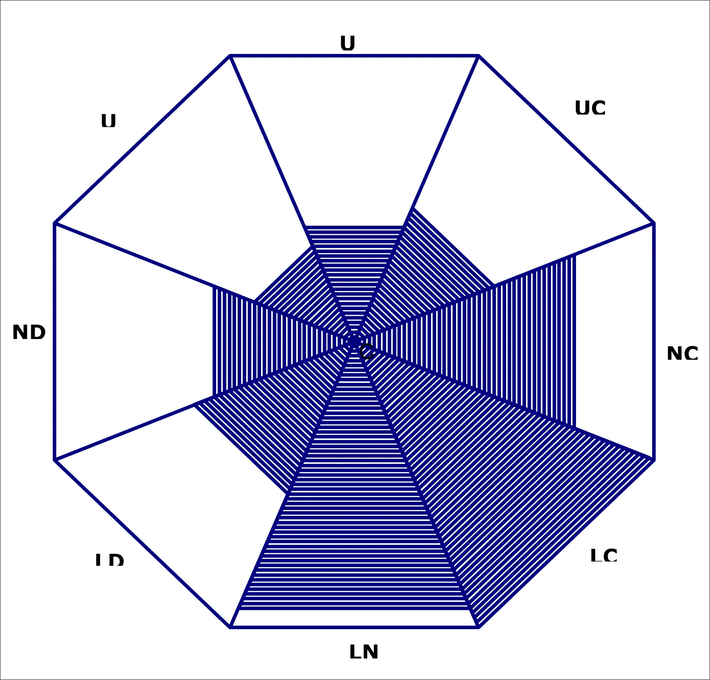
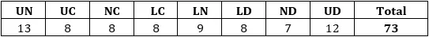
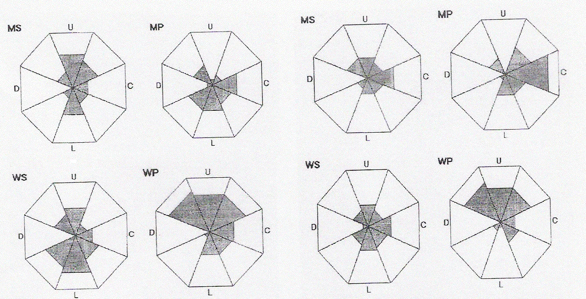
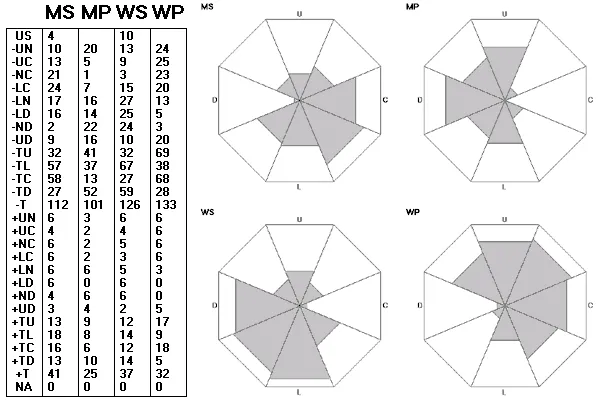
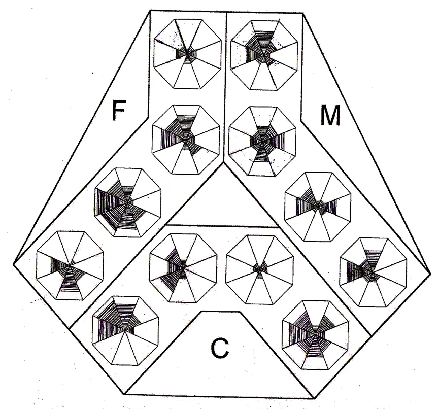
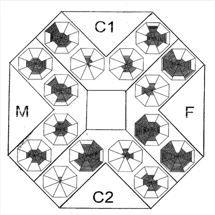

Οι υγιείς και ποιοτικές σχέσεις προσφέρουν πολλαπλά οφέλη στη ζωή κάθε ανθρώπου, όπως π.χ. συμβάλουν στην σωματική και ψυχική υγεία του, στην προσωπική, οικογενειακή, επαγγελματική και κοινωνική ευημερία και στην ποιότητα ζωής του. Ο εντοπισμός, επομένως, πιθανών δυσκολιών που έχετε στις διαπροσωπικές σας σχέσεις είναι ύψιστης σημασίας καθώς θα αποτελέσει την αφετηρία για να δουλέψετε και να βελτιώσετε τις δυσκολίες αυτές. Εδώ θα βρείτε κάποια από τα ερωτηματολόγια που έχουν δημιουργηθεί για την αξιολόγηση των δυσλειτουργικών σχέσεων.
Να θυμάστε ότι η μακροβιότερη μελέτη στον κόσμο για την ευτυχία, η οποία ξεκίνησε το 1938 στο Harvard, κατέληξε στο συμπέρασμα ότι “οι καλές σχέσεις μάς κάνουν ευτυχισμένους και υγιείς» (Waldinger & Schulz, 2023).Τo ερωτηματολόγιo Τhe Person’s Relating to Others Questionnaire (PROQ3) έχει κατασκευαστεί με σκοπό να μελετήσει τα διάφορα αρνητικά συναισθήματα και στάσεις που έχουν μερικές φορές οι άνθρωποι για ή προς τους άλλους ανθρώπους Βασίζεται στη Θεωρία των τύπων του Σχετίζεσθαι (Relating Theory) που αναπαριστά τις δυσλειτουργικές σχέσεις των ανθρώπων σε οκτώ (8) διαστάσεις και και τις οπτικοποιεί σε μία γραφική αναπαράσταση ενός οκταγώνου. Κάθε τμήμα του Οκταγώνου αναπαριστά έναν διαφορετικό τύπο του σχετίζεσθαι. Όσο πιο σκιαγραφημένο (μαυρισμένο) είναι το τμήμα του Οκταγώνου, τόσο πιο ΑΡΝΗΤΙΚΕΣ είναι οι σχέσεις από τη συγκεκριμένη θέση.
Τα αποτελέσματα παρουσιάζονται σε δύο μορφές:


Τo ερωτηματολόγιο The Couple’s Relating to Each Other Questionnaires (CROQ3) έχει κατασκευαστεί με σκοπό να μελετήσει τα διάφορα αρνητικά συναισθήματα και στάσεις που έχουν μερικές φορές οι άνθρωποι για ή προς το/τη σύντροφό τους. Βασίζεται στη Θεωρία των τύπων του Σχετίζεσθαι (Relating Theory) που αξιολογεί τις δυσλειτουργικές σχέσεις των συντρόφων βάσει οκτώ (8) διαστάσεων / διαφορετικών τύπων συσχέτισης. Οι δυσλειτουργικές σχέσεις επίσης αποτυπώνονται σε γραφική αναπαράσταση τεσσάρων (4) οκταγώνων, κάθε τμήμα του οποίου αντικατοπτρίζει τους οκτώ (8) διαφορετικούς τύπους συσχέτισης. Δηλαδή, κάθε τμήμα του οκταγώνου αναπαριστά έναν τύπο του σχετίζεσθαι.
Τα τέσσερα (4) οκτάγωνα προκύπτουν καθώς το CREOQ3 αξιολογεί τον τρόπο που κάθε σύντροφος σχετίζεται με το/τη σύντροφό του/της (Αξιολόγηση του Εαυτού) και την αντίληψη που έχει για τον τρόπο που ο/η σύντροφός του σχετίζεται προς αυτόν/ή (Αξιολόγηση Συντρόφου).
Τα αποτελέσματα παρουσιάζονται με δύο τρόπους: (α) αριθμητικά, με βαθμολογίες για τις οκτώ (8) διαστάσεις/διαφορετικούς τύπους συσχέτισης (που αποτυπώνονται σε οκτώ αντίστοιχες θέσεις/τμήματα του Οκταγώνου) για κάθε ένα από τα τέσσερα (4) οκτάγωνα και (β) με γραφική αναπαράσταση, με ένα διάγραμμα τεσσάρων (4) οκταγώνων, το οποίο απεικονίζει ως σκιαγραφημένες περιοχές τις θέσεις/τα τμήματα του Οκταγώνου, στα οποία παρατηρούνται αρνητικές – δυσλειτουργικές σχέσεις. Όσο πιο σκιαγραφημένο (μαυρισμένο) είναι το τμήμα του Οκταγώνου, τόσο πιο ΑΡΝΗΤΙΚΕΣ είναι οι σχέσεις από τη συγκεκριμένη θέση.


Τo ερωτηματολόγιο The Family Members Interrelating Questionnaire (FMIQ) αποτελεί παράγωγο του CREOQ3 και αξιολογεί την αλληλεπίδραση (τους τύπους του αλληλοσχετίζεσθαι) μέσα στις οικογένειες.
Παρόμοια με το CREOQ3, αξιολογεί την αλληλεπίδραση μεταξύ δύο συγκεκριμένων μελών (στην προκειμένη περίπτωση, μελών της οικογένειας). Έτσι, το ερωτηματολόγιο αυτο-αξιολόγησης αξιολογεί τον τρόπο με τον οποίο κάθε μέλος της οικογένειας σχετίζεται με το άλλο, ενώ το ερωτηματολόγιο ετερο-αξιολόγησης αξιολογεί τον τρόπο με τον οποίο κάθε μέλος αντιλαμβάνεται πώς το άλλο σχετίζεται με αυτόν/αυτήν.
Αποτελείται από ένα σύνολο 16 ερωτηματολογίων οκτώ υποκλιμάκων, με 48 στοιχεία το καθένα, για τη αξιολόγηση των αρνητικών τύπων τόσο της αυτο- όσο και της ετερο-συσχέτισης μέσα στις οικογένειες.
Το σχήμα παρουσιάζει μια ενδεικτική εκτύπωση του FMIQ σχετικά με την αλληλεπίδραση μέσα σε μια οικογένεια που περιλαμβάνει μία μητέρα (M), έναν πατέρα (F) και ένα παιδί (C).
Τα οκτάγωνα είναι οργανωμένα σε τρεις ομάδες των τεσσάρων, καθεμία από τις οποίες σχηματίζει μια γωνία γύρω από το κάθε άτομο. Σε κάθε γωνία, τα δύο εσωτερικά οκτάγωνα απεικονίζουν τον τρόπο με τον οποίο ο/η ερωτώμενος/η σχετίζεται με το άτομο προς το οποίο «βλέπει» το οκτάγωνο (αυτο-αξιολόγηση), ενώ τα δύο εξωτερικά οκτάγωνα απεικονίζουν την αντίληψη του ίδιου ατόμου για το πώς το άλλο άτομο σχετίζεται μαζί του/της (ετερο-αξιολόγηση).

Το σχήμα παρουσιάζει μια ενδεικτική εκτύπωση του FMIQ σχετικά με την αλληλεπίδραση μέσα σε μια οικογένεια που περιλαμβάνει μία μητέρα (M), έναν πατέρα (F), ένα παιδί (C1) και ένα δεύτερο παιδί, αδελφό/ή (C2).
Τα οκτάγωνα είναι οργανωμένα σε τέσσερις ομάδες των τεσσάρων, καθεμία από τις οποίες σχηματίζει μια γωνία γύρω από το κάθε άτομο. Σε κάθε γωνία, τα δύο εσωτερικά οκτάγωνα απεικονίζουν τον τρόπο με τον οποίο ο/η ερωτώμενος/η σχετίζεται με το άτομο προς το οποίο «βλέπει» το οκτάγωνο (αυτο-αξιολόγηση), ενώ τα δύο εξωτερικά οκτάγωνα απεικονίζουν την αντίληψη του ίδιου ατόμου για το πώς το άλλο άτομο σχετίζεται μαζί του/της (ετερο-αξιολόγηση).
